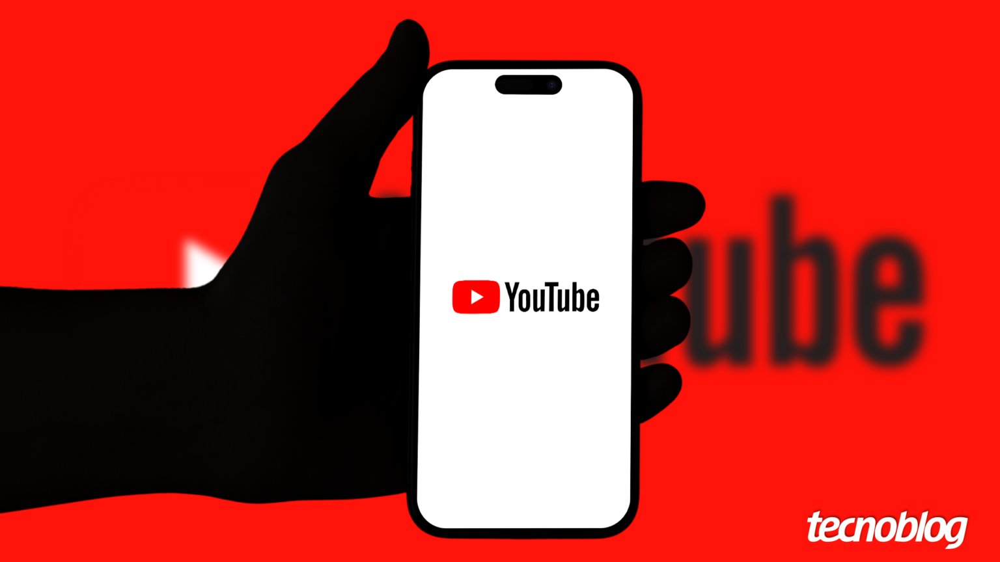

YouTube vai reduzir o alcance de Shorts que só republicam “cortes” de outros canais
Algoritmo passa a priorizar conteúdo original; trechos de terceiros seguem permitidos se houver comentário, edição ou narrativa própria.

O YouTube anunciou que está atualizando os sistemas de recomendação dos Shorts para priorizar conteúdo original e reduzir o alcance de vídeos que apenas republicam trechos de outros criadores sem acrescentar nada, informa o Tecnoblog.
A prática dos “cortes” — trechos de podcasts, entrevistas ou declarações extraídos de outros canais, muitas vezes sem crédito ou autorização — é comum na plataforma e pode tirar visualizações dos autores originais. Muitos espectadores nem percebem que o vídeo não foi publicado pelo canal de origem.
O YouTube não proíbe esse tipo de conteúdo. A empresa orienta que, ao usar trechos de outro criador, o canal agregue valor real com comentários próprios, edições exclusivas ou narrativa, e diz que a mudança deve dar mais chances de crescimento a quem publica material original.
Segundo o Tecnoblog, ficou em aberto se a medida também afetará criadores que publicam trechos dos próprios vídeos para atrair público a conteúdos mais longos, uma estratégia legítima e muito usada.